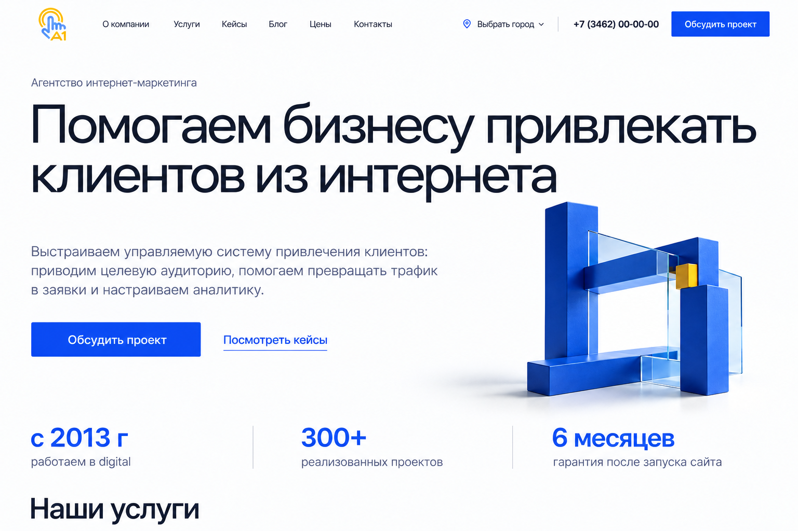
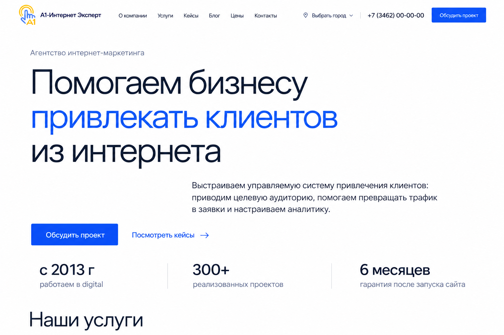
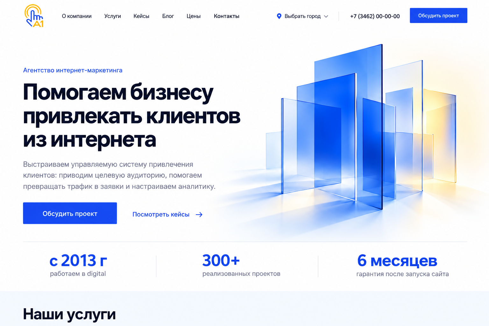

Вариант 01
Собранный механизм
Широкий заголовок и один синий объёмный объект передают идею согласованной работы команды.
Характер
Открытая композиция, чёткая геометрия, заметный графический акцент.
На что обратить внимание
Объект делает первый экран выразительнее и добавляет технологичности.

Вариант 02
Выставочная типографика
Главный акцент — само предложение A1. Лёгкий крупный шрифт, белый фон и свободное пространство.
Характер
Спокойный, открытый и сдержанный. Выразительность строится на пропорциях и типографике.
На что обратить внимание
Первый экран обходится без большой иллюстрации и сосредоточен на тексте.

Вариант 03
Привычный сайт агентства
Текст и кнопки слева, абстрактная геометрия справа. Знакомая композиция с мягким светом и градиентами.
Характер
Понятный и привычный. Текст и изображение занимают отдельные, уравновешенные части экрана.
На что обратить внимание
Структура легче узнаётся, но меньше отличается от других агентских сайтов.